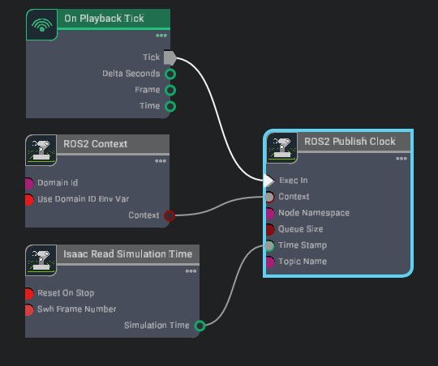
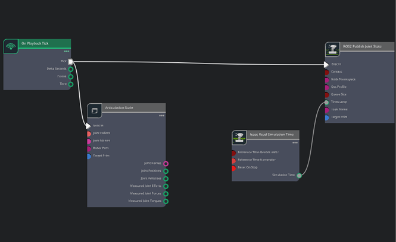
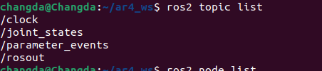
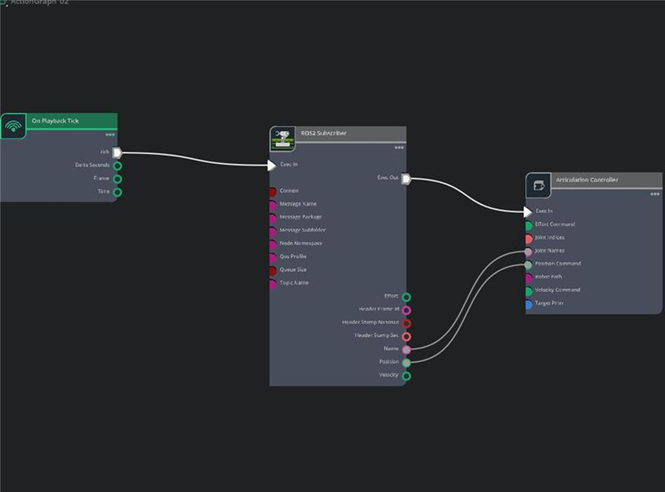

ROS2–Isaac Sim Integration for AR4 (Linux ↔ Windows)¶
This tutorial shows how to connect the AR4 robot running in ROS2 on Linux with Isaac Sim running on Windows. After the connection is established, you can control the robot from RViz / MoveIt on Linux and visualize the motion in Isaac Sim on Windows.
Requirements¶
- ROS2 Humble installed on Linux 22.04
- AR4 ROS2 workspace already built on Linux 22.04
- Isaac Sim 5.1 installed on Windows
- AR4 robot model already imported into Isaac Sim
- ROS2 Bridge extension available in Isaac Sim
Set ROS domain and DDS configuration¶
-
To let Linux ROS2 and Isaac Sim communicate for both Linux and windows machines, make sure both sides use the same:
ROS_DOMAIN_IDRMW_IMPLEMENTATIONROS_LOCALHOST_ONLY
-
On Linux:
Open a terminal and run:
cd ar4_ws source ~/ar4_ws/install/setup.bash export ROS_DOMAIN_ID=42 export RMW_IMPLEMENTATION=rmw_fastrtps_cpp export ROS_LOCALHOST_ONLY=0 ros2 daemon stop ros2 daemon start -
On Windows:
Navigate to Isaac Sim installation folder and open a terminal there.
To verify, run:$env:ROS_DOMAIN_ID="42" $env:RMW_IMPLEMENTATION="rmw_fastrtps_cpp" $env:ROS_LOCALHOST_ONLY="0"You will see on both Linux and Windows terminals:echo $env:ROS_DOMAIN_ID echo $env:RMW_IMPLEMENTATION echo $env:ROS_LOCALHOST_ONLY- 42
rmw_fastrips_cpp0
If so, the basic ROS2 communication is configured correctly. (PS: Do not close these terminals after setting the environment variables.)
Connection Verification¶
-
Start Isaac Sim with ROS2 Bridge
In the Isaac Sim installation directory on Windows, run:
.\isaac-sim.bat --/isaac/startup/ros_bridge_extension=isaacsim.ros2.bridgeThis launches Isaac Sim with the ROS2 Bridge extension enabled.
-
Verify ROS2 connection inside Isaac Sim
In Isaac Sim:
-
Click
Window→Graph Editor -
Create a new
Action Graph
We will build a simple clock publisher graph to verify the connection.
When you open the action graph, add the following nodes:
-
On Playback Tick -
ROS2 Context -
Isaac Read Simulation Time -
ROS2 Publish Clock
Connect them as shown in figure below.

-
-
Check ROS2 topics on Linux
Go back to Linux and run in terminal:
Ifros2 node list ros2 topic list/clockappears, ROS2 communication between Linux and Isaac Sim is working.
Joint State Communication¶
-
Publish joint states from Isaac Sim
Next, we publish the AR4 robot joint states from Isaac Sim to ROS2.
Create a new action graph and add：
-
On Playback Tick -
Articulation State -
Isaac Read Simulation Time -
Ros2 Publish Joint State
Connect them as shown in Figure below.

-
-
Configure node properties
For the
Articulation StateandROS2 Publish Joint Statenodes in action graph:- Set
targetPrimto the AR4 articulation root:
/World/mk3/base_link- Fill
jointNamesas:
joint_1 joint_2 joint_3 joint_4 joint_5 joint_6After fill out these , return to terminal in Linux and run:
ros2 topic listYou will see the figure below, demonstrating you communicate successfully.

- Set
Motion Command Pipeline¶
-
Prepare trajectory format conversion
Before subscribing to MoveIt output and sending commands into Isaac Sim, we need to preprocess the trajectory message format.
Create a new folder under ar4_ws, for example:
cd ar4_ws mkdir -p tools cd toolsCreate a Python script, download the script below and put it into
toolsfolder. This script converts MoveIt display trajectory messages into a format that Isaac Sim can subscribe to. -
Create the subscriber and articulation controller graph
Now we create another Action Graph in Isaac Sim for robot control.
Add:
-
On Playback Tick -
ROS2 Subscriber -
Articulation Controller
Connect them as shown in figure below.

Configure the ROS2 Subscriber node:
Set:
Configure the Articulation Controller node:messagePackage = sensor_msgs messageSubfolder = msg messageName = JointState topicName = /isaac_joint_targetsSet targetPrim to:
3. Run the relay script on Linux/World/mk3/base_linkBack on Linux, go to the tools folder and run in the new terminal base on this folder:
4. Launch MoveIt demo on Linuxcd tools chmod +x relay_display_traj_to_jointstate.py ./relay_display_traj_to_jointstate.pyOpen a new terminal on Linux:
cd ar4_ws source install/setup.bash ros2 launch annin_ar4_moveit_config demo.launch.py ar_model:=mk3Run the final control loop¶
-
At this stage:
- Isaac Sim should already be open on Windows
- The Action Graph should be running
- The relay script should already be running on Linux
- RViz / MoveIt should already be open on Linux
Now:
- Click
Playin Isaac Sim - In RViz, drag the interactive marker, click
Plan & Executethe motion.
You will see the communication, shown as video below: